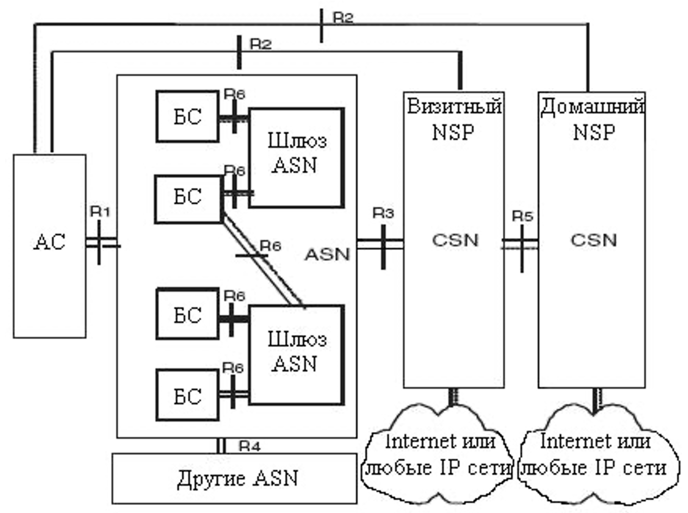

Беспроводные технологии передачи данных

|
|
Беспроводные технологии передачи данных |
|
|
|
WMANWMAN (Wireless Metropolitan Area Networks) — беспроводные сети масштаба города. Предоставляют широкополосный доступ к сети через радиоканал. Стандарт IEEE 802.16, опубликованный в апреле 2002 года, описывает wireless MAN Air Interface. 802.16 — так называемая технология «последней мили», использующая диапазон частот от 10 до 66 ГГц. Так как это сантиметровый и миллиметровый диапазон, то необходимым условием является прямая видимость между антеннами приёмопередающих устройств. Стандарт поддерживает топологию point-to-multipoint, технологии frequency division duplex (FDD) и time division duplex (TDD), с поддержкой quality of service (QoS). Возможна передача звука и видео. Стандарт определяет пропускную способность 120 Мбит/с на каждый канал в 25 МГц. Для соединения базовой станции с абонентской используется высокочастотный диапазон радиоволн 1,5 до 11 ГГц. WiMAXСтандарт WiMAX – Worldwide interoperability for Microwave Access, вышел в свет в конце 2001г. В соответствии с иерархией стандартов беспроводного доступа он относится к классу MAN (Metropolitan Area Network). По ряду показателей, таких как пропускная способность, покрытие территории и предоставляемые услуги, WiMAX превосходит стандарт Wi-Fi (IEEE802.11) класса LAN (Local Area Network), позволяя при развитой инфраструктуре строить региональные, национальные и даже глобальные сети. На физическом уровне в стандарте WiMAX применяют две принципиально разные технологии. В режиме SC к радиоканалам предъявляют те же требования, что и в радиорелейных сетях: использование только прямых лучей и применение узконаправленных антенн, подавление всех отраженных лучей с целью устранения межсимвольной интерференции. В связи с этим технологию SC невозможно использовать в сетях массового пользования с многолучевым распространением радиоволн в каналах связи. Архитектура сети стандарта WIMAXNRM (Network Reference Model – базовая модель сети) WiMAX, являющаяся логическим представлением сетевой архитектуры. NRM подразделяет систему на три логические части:
Функционально базовая станция представляет собой один сектор с выделенным частотным диапазоном, обеспечивающим интерфейс IEEE 802.16e с абонентской станцией. Дополнительные функции, выполняемые базовой станцией в обоих профилях, включают распределение для восходящего и нисходящего каналов, классификацию трафика и SFM (управление сервисным потоком). При этом должны быть выполнены требования по QoS для различных классов трафика, передаваемых по радиоинтерфейсу. Кроме того, базовая станция также управляет статусом абонентской станции (активный, неработающий), поддерживает туннельный протокол в направлении к шлюзу ASN, обеспечивает с помощью сервера DHCP динамическими адресами. БС также передает сигнальный обмен по протоколам MM, обеспечивая все уровни защиты, предусмотренные стандартом. Базовая станция может быть подключена одновременно к двум шлюзам для баланса нагрузки. Шлюз ASN – это основной элемент сети. Во время сеансов связи шлюз организует хэндовер абонентов и пейджинг абонентской станции, управляет доступом к сети. Для любого подсоединенного абонента в шлюзе открыта база данных, включающая профили абонента и ключи шифрования. На шлюз возложены задачи авторизации потока услуг согласно профилю абонентов и QoS. В направлении БС шлюз поддерживает туннельное соединение; в направлении ядра сети (CSN) шлюз осуществляет соединение по стандартному IP протоколу. |
|
разработка Леонида Спиридонова |
 Главная
Главная WMAN
WMAN